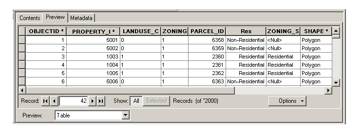

What is a GIS
- A geographical information system helps people visualize and manage data with regards to geography
- The data could be something as simple as street names and orientation
- Geographical information is data with respect to location
- Common examples of geographic information systems are a commercial gps and google maps

What is a Geodatabase
- A geodatabase is a mutable datastructure which contains all the data one wishes to present
- There are several programs which perform geodatabase like functions
- The most notable is Esri's ArcGIS
Features of a Geodatabase
- Generally, a geodatabse is a container for various types of data
- Vector, Raster, Tables, Address coding, etc.
- An Esri Geodatabase can include:
- Feature Classes: An attribute which shares a "common geometry" (points, lines, and shapes) with other attributes.
- Ex: District Lines and Lot Lines
- Address Geocoding: A program which links locations with an address
- Topology: Ruleset for how the polygons of the visualization are formatted
- Relationship Class: Creates dependencies between specific datatypes
- A set of feature data can be up to 1 TB
Google Maps Data Layer
- An alternative to ArcGIS is the Google Maps Data Layer
- When creating a website which uses Google Maps API, one can include unique overlays through the data layer
- The data layer is designed to take data from an online format, GeoJSON
- The data layer can then be modified with javascript
What really is a Geodatabase
- Truth be told, a geodatabase is essential SQL with tons of data
- It is a sql style collection of datasets of various types run through a program in order to create a visual aid for users
